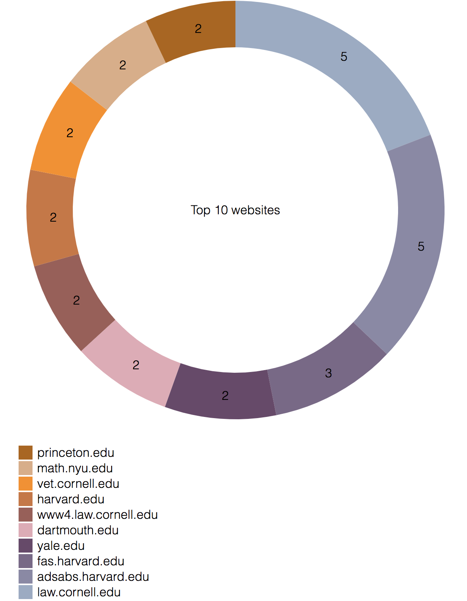

University Domains (harvard, princeton, nyu, cornell, dartmouth, brown, yale)
May 2018

October 2018

Clustering communities on web crawl data
Crawlers: Oluwaseyi Talabi, M. Rafay Aleem, Prashanth Rao, Nandita Dwivedi
Github Repository: community-clustersIn our final project, we look to apply big data techniques to perform large-scale graph mining on web crawl data. We utilize the Common Crawl web dataset, which is an open dataset hosted on Amazon Web Services' cloud platform. This is an extremely large dataset that consists of petabytes of web crawl data. Our particular problem looks at identifying communities (or clusters) of related web pages utilizing nothing but the URL information and the links between them, using web graphs built from the crawl data. Our work is inspired by this introductory Medium blog post on this topic. In particular, our project focuses on the following aspects:
In recent years, there have been some interesting applications of graph analysis on datasets in areas as diverse as social networks, biology and computer science. In the field of machine learning, graphs are especially important for unsupervised learning, especially clustering. As datasets become larger and larger, finding more efficient unsupervised clustering techniques to gain insights from the data will become more and more important. Recently, the availability of big data tools combined with freely available open datasets and relevant example code on GitHub has enabled widespread graph analysis in a host of real-world applications.
Graphs are a fundamental type of data structure that utilize the underlying substructures in the data to capture relationships between its objects. A graph is a very simple data structure, represented by vertices and edges, which can be directed or undirected. In our case, since we are analyzing the relationship between web URLs by just using the links that they connect to, we will be looking at undirected graphs, where each web page is a vertex, and each href, or outgoing link from one web page to another, is an edge.
For our future careers as data scientists/engineers, we felt that graph analysis and visualization was a fruitful topic to finetune our data handling skills and would give us exposure to new areas of bid data analysis and visualization.
In approaching this problem, we brainstormed on a combination of approaches based on our reading numerous of blogs and research papers that tackle the problem of graph analysis.
Since Common Crawl dataset is extremely large, it is unfeasible to store it locally for processing and extracting information. To avoid this, we used AWS S3 Boto client to stream data directly from Common Crawl buckets. This kind of streaming allows us to process data in chunks without causing CPU or memory to be a bottleneck. We feed this stream to a WARC parser which processes each record that is a HTTP response type and further extracts parent and child hrefs. During this process, we also ensure that any child links lying under the parent domain are removed to avoid any skew in our analysis.
For the ETL process, we leverage mapPartitionsWithIndex instead of map>. The reason for this is to optimize S3 downloads over partitions rather than performing it for every function call of the map operation. mapPartitionsWithIndex and mapPartitions allow us to limit this download operation per partition and hence avoid network congestion.
The number of WARC files for a single month of crawl is usually around 72,000 with each file containing several segment paths. To make our ETL process more flexible, we have added batching on top of our Spark job. For instance, if there are 100 segment paths in a single WARC file and we want to use a batch size of 10, Spark will process data for 10 files first, store the results in parquet format and continue on the next set of 10 segment paths. This allows us to checkpoint our work such that if any of these jobs fail, we do not lose the entire amount of data that has been processed and can continue from the point-of-failure.
Common crawl web data is stored in three primary file formats: WAT, WET and WARC. These are an efficient storage format for massive web arvhice data, and the full extent of the data structure is explained on the source page. Common Crawl generates extensive crawl data roughly once a month (each a few petabytes in size), and stores all of the information in these three file formats. The data is then indexed and the index information is made publicly available.
The format we are primarily interested in is the WARC source files. Using some starter code from this GitHub repo, we wrote some of our own code that parses through a subset of the complete Common Crawl database using a list of download links (specified as S3 buckets) from the index page mentioned above. Since parsing through the crawl data for the entire month all at once can be quite expensive, we limit the number of WARC files that our code looks through. Given sufficient compute resources and run time, we imagine that this same code would scale to be able to parse through an entire month's data without significant rework.
Our ETL code extracts the URLs of the parent web page through the HTML source inside the WARC files, and then parses through the same HTML source for embedded href links that the parent page points to. We refer to these embedded hyperlinks as "children". To simplify the extraction and show us direct parent-child relationships, we limit the search to only one level of depth, and store both the parent and child URLs in a PySpark DataFrame. Additional filtering is done to remove duplicates and we limit our domain search to only the topmost level. For example, "www.cnn.com" and "https://www.cnn.com/2018/12/01" are both stored as "cnn.com", with subdomains removed.
Once we extract the relevant parent-child domain information, we export all the data to the parquet format. This step greatly condenses the information to a few hundred megabytes at most. The parquet data is then read back into PySpark so that we can perform graph analysis. We use PySpark's GraphFrame module to condense and filter information in the DataFrames to edges and vertices, following which we can run clustering analyses on them.
Label propagation analysis (LPA) is a very useful technique in studying the relationship between the vertices of a graph. In beginning our analysis, we performed an extensive literature survey on the various available methods to perform community detection for studying web graphs. This paper by Santo Fortunato discusses in detail the different clustering techniques used in graph analysis, and their applications in real-world problems in biology, sociology, etc.
The key benefit of LPA over other techniques for graph clustering is that it requires no prior information about the communities beforehand, nor does it need a specific optimization objective. It utilizes a label, which in our case is a unique identifier assigned to each vertex (or web domain name) in our graph. At the start, all vertices of the graph are assigned their own unique identifiers, but as we perform an iterative update of the vertex labels, each vertex takes on the label of the one that majority of its neighbors shares. "Convergence" of the algorithm is achieved once each vertex's label has a similar label to its neighbor. In a large enough graph, this difference in label is sufficient to see how closely or distantly two vertices should lie, and this tells us something about their relationship.
Another useful technique to identify the importance of specific domain names relative to the others, is PageRank. Given a particular graph structure, running a PageRank analysis computes a score for each vertex of the graph depending on how many other vertices point to it. Looking at the graph this way allows us to pinpoint nodes of "high centrality" very easily. In our case, we look to visualize the vertices (or nodes) of our LPA-computed graph by sizing the nodes proportional to the PageRank Score. This tells us a lot about the graph structure in a visual manner.
Once we have the analysis completed, we write our results to CSV files. We then postprocess the analysis data (nodes and edges) using a Python script. The data is formatted and written to a JSON file that can then be read into D3 for visualization. This particular step of our pipeline is not particularly suited for "huge data", since D3 is not really meant for this purpose. However, in doing extensive research on graph visualization, we realized that there are not a lot of tools out there that are both easy to use and are optimized for handling millions of graph nodes, hence we stick to visualizing a small subset of our data using D3.
As one can imagine, parsing through a dataset that is several petabytes in size requires some forethought. We stood on the shoulders of people who have tackled this issue before us, and looked at example code on GitHub. However, for our specific case, we not only needed to extract and parse out the URL information, but also handle filtering and formatting issues that arose, for which we wrote some custom cleaning code. Below is a summary of some of the issues we faced in our ETL phase:
Visualizing large graphs (with hundreds of thousands or more) nodes is quite a challenge. In most cases, it doesn't make sense to visualize these many nodes and edges all at once, since a lot of the relationships are obscured in such a large and complex graph. There are quite a few graph visualization tools out there, and we faced some problems in deciding which to use. In the end, we chose to use D3 because of its ease of use, great documentation, high aesthetic appeal and web-rendering capabilities.
In addition to the size of the data, the technique we use for graph clustering, called "force-clustering" (described in more detail in the next section) , has been implemented in D3 in way that it scales with O(n log n) per iteration (see this thread). This makes rendering anything higher than 50,000 nodes very expensive, and it would take quite a long time to design a system that performs the rendering on the server side rather than the client side. An alternate tool to perform the visualization is to use a tool like Gephi; however, it does not have web-based rendering capabilities and came with its own learning curve and implementation difficulties.
In the end, we came to a compromise with respect to data size, aesthetics and ease of deployment on a web-interface, and chose D3 for our specific case.
Label propagation analysis begins by assigning a unique random label to each and every domain name (which form nodes in our graph). As the LPA iterations progress, each node takes on the label of its nearest neighbors based on the similarity of their children. The intrinsic nature of the parent-child relationships results in the labels achieving "convergence", i.e. after a few iterations, all nodes that are similar take on the labels of their neighbors, and once clusters are formed, the labels do not update any further. Once we run our LPA analysis using PySpark GraphFrames, we pipe a condensed version of the output to a JSON file, which is used as input to D3 for graph visualization.
D3 has some very useful utilities to help visualize graph structures. One technique that proved useful in our analysis was "force-directed graphs". In this approach, we run a simple physics emulator for positioning the vertices of the graph visually such that "forces" exist between elements. Elements that are closely connected in the graph (i.e. share the same label from LPA) attract one another, whereas elements that are very different in their labels repel one another. Visualizing the graph this way allows us to more easily pick up and identify communities of interest. For example, domain names like "facebook.com" and "twitter.com" are more heavily connected to other domains, and these vertices form central points in the graph, which is easily visible upon prelimilary inspection.
D3 utilizes the label information from the LPA and runs a "force simulation", where nodes with similar labels "attract" one other, and nodes with very different labels "repel" one another. This is a good way to visualize how similar or different to clusters are - clusters that are close to one another are very similar, and those that are far apart (or are not connected at all) are very different.
One case that we looked at involved studying the relationship between shopping website domains. Consider three shopping domains: Amazon, eBay and Etsy. These are three well-known online vendors that sell a variety of products. We wanted to explore how these particular domain names form clusters, and if so, how they are connected to each other. Our reasoning is that small-scale vendors that sell their products on Etsy would not always do so on Amazon, and this should be apparent when looking at the clusters.
Shopping Domains (etsy, ebay, amazon)
We show the results for the shopping domains (fully interactive animations are linked below each image) - the data used for each case was crawled a few months apart in 2018. It is clear that Amazon forms the biggest cluster, which makes sense considering Amazon's scale of web presence and the sheer number of online vendors who link to Amazon. What is interesting, however, is that the domain names that cluster around Etsy are quite unique, highighting that our graph is capturing something inherent in the real world - in this case vendors who sell their products on Etsy are not the same ones that also sell on Amazon.
Another observation that we can make is by following the node connections from Etsy's root node in the graph, and seeing how it connects to neighboring clusters. In the month of October, we can see that there are a couple of reseller web domain names that form a connection between Etsy and eBay. This is interesting because it gives us information that we did not have otherwise - learning the names of resellers purely through a graph visualization is a different way of gaining insights on data that is otherwise unused. One can easily imagine a use-case where a large graph mining operation could be used to decide marketing or investment strategies based on graphical analysis and visualization techniques.
Another interesting use-case would be to analyze the web content and connectivity between news domains. In this case, we choose several major US news outlets and see how their web presence is linked with one another. As we might expect, news organizations are tightly linked because of the multiple ways they link to each other through a variety of stories, so we would expect these clusters to be more tightly mixed up.
News Domains (cnn, foxnews, huffingtonpost, washingtonpost, nytimes, usatoday)
The clusters formed by analyzing news domain URLs indeed shows the deep connectivity one might expect based on what we observe in the real world. Clusters for certain domains such as the New York Times and the Washington Post end up close to one another. CNN's parent domain appears far enough away from Fox news, as one might expect; however, CNN's money (finance) page appears closer to Fox news. On inspecting these kinds of connections over longer periods of time (and with much larger amounts of data), it could be possible to gain deeper insights from such visualizations.
A similar technique can be extended to be used on a large list of political blogs, or fashion web pages to see if these connections show some inherent property of society and politics. Graphs are indeed useful tools to study this kind of relationships.
To see how our technique can apply to a range of domains, we also tried a case that studied university domains as shown below. Universities are fundamentally different in the sense that they do not link to each other as frequently as news domains might do. In addition, the traffic to university web pages and the number of external links that point to a university web page may not be as large enough to form distinct cluster. On analyzing a subset of universities on the US east-coast, this is indeed what we observe. The clusters formed are far less dense, meaning that there aren't anywhere near as many web pages that point to university domains as other domains, such as shopping or news. Some of this could be attributed to the fact that we are only looking at a subset of the crawl data, however, there might be some inherent pattern based on the clusters we visualize.
University Domains (harvard, princeton, nyu, cornell, dartmouth, brown, yale)
In addition to running LPA on the data, we also apply the PareRank algorithm to find which are the most dominant communities in each month's analysis. Since we are looking at TLDs and not parent domains, we are able to obtain some useful geographical information on domains from multiple countries.
Shopping Domains (etsy, ebay, amazon)
News Domains (cnn, foxnews, huffingtonpost, washingtonpost, nytimes, usatoday)
University Domains (harvard, princeton, nyu, cornell, dartmouth, brown, yale)
Common Crawl data is a very highly valuable and open data source for various aspects of the internet, and has the potential to yield many useful insights aside from the aspects we looked at in this project. Over the course of our work, we had to learn about various aspects of big data systems, cloud storage, encoding styles and also how to extract relevant and meaningful data from large datasets. We had to be creative about how to visualize the graphs in an aesthetically pleasing way while yielding useful visual insights through an interactive web interface. We used a lot of example code that is available for similar tasks, but customized it to suit our goals and published our code openly on GitHub.
There are a number of areas where our work can be extended and refined. We hope to look into better ways to perform upstream data extraction and filtering in a way that further minimizes the amount of local data stored. Additional ways to identify parent-child relationships in the web URLs, and utilizing metadata information from the WARC files can be looked at. Additional user-interface features could be added for making the entire pipeline a lot smoother and easier to modify for specific tasks. For example, an alternate data pipeline that utilizes graph databases (like Neo4j) could massively speed up the querying capability and allow us to filter down the domain names to our communities of interest more efficiently. With regard to visualization, there are numerous other tools out there that could possibly handle large graph loads better than our approach, such as Graphviz and Sigma.js. The graph processing and visualization space is continuously evolving, and we aim to keep a close watch on these tools and techniques for our future careers.
Based on the project requirements, we include the below self-evaluation of our efforts for this project. We spent a good deal of effort in developing an ETL pipeline using a combination of S3, boto3 and parquet formats to minimize local storage requirements. We also looked at how our approach would scale for much larger datasets, and implemented our PySpark routines accordingly. Along the way, we learned a good deal about technologies such as Spark GraphFrames, S3, and interactive visualization techniques for graphs in D3.
| Data acquisition | 3 |
|---|---|
| ETL | 3 |
| Problem Motivation | 2 |
| Algorithmic work | 1 |
| Bigness/parallelization | 3 |
| UI | 3 |
| Visualization | 3 | Technologies | 2 |
| Total | 20 |